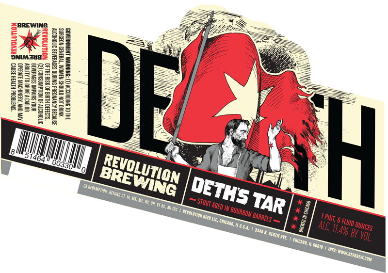
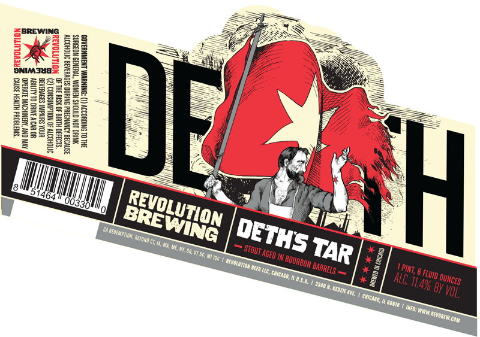
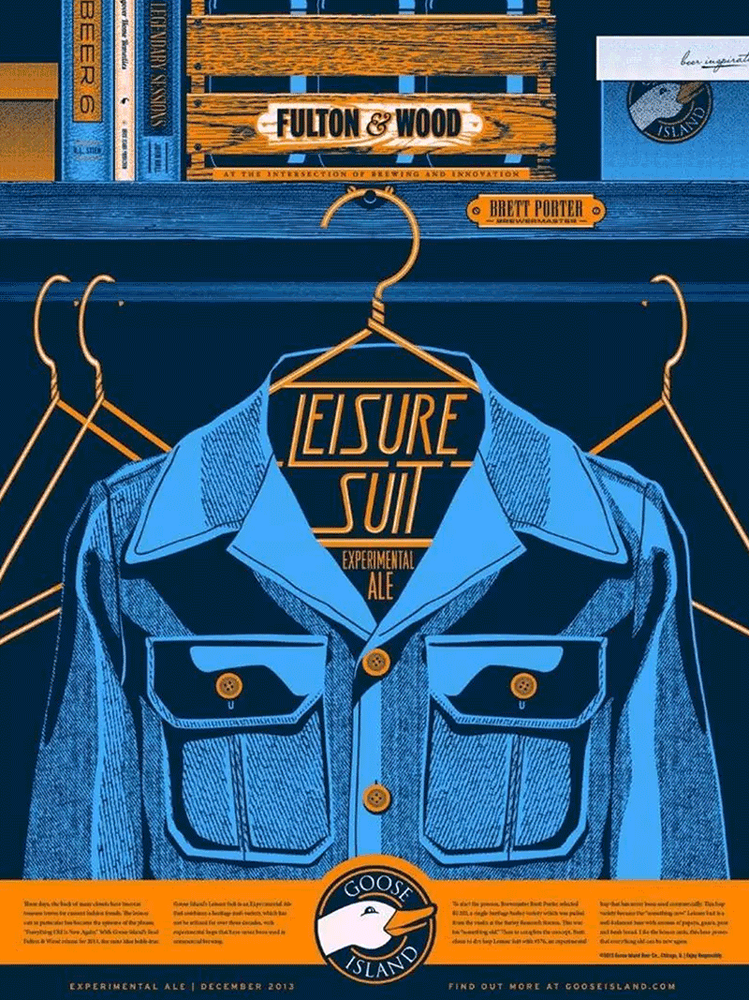
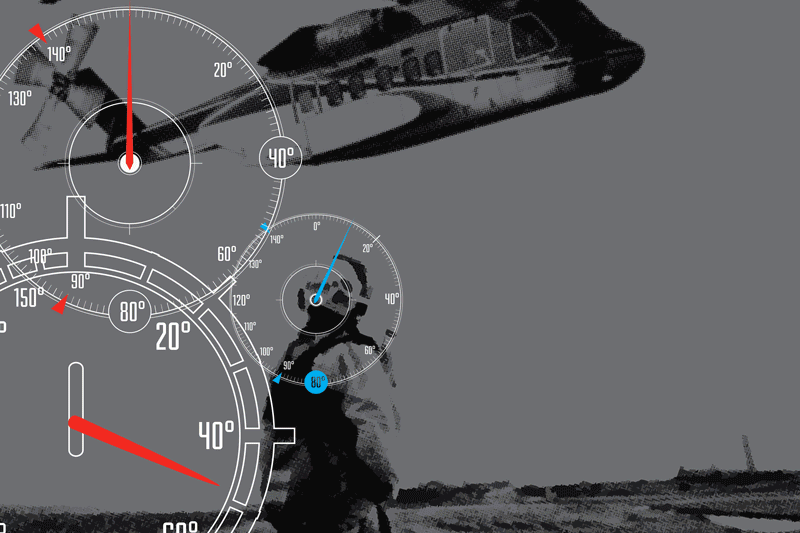
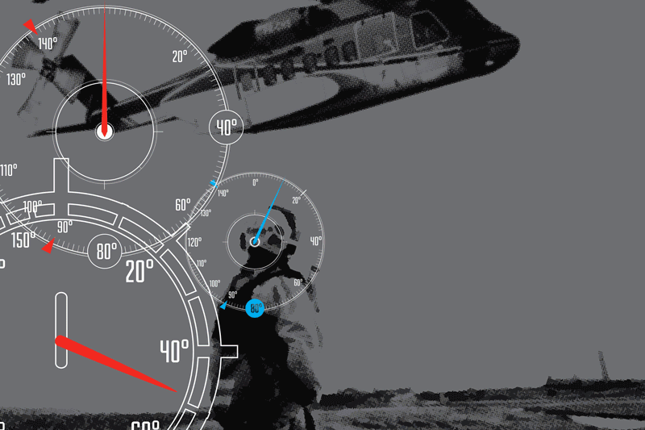
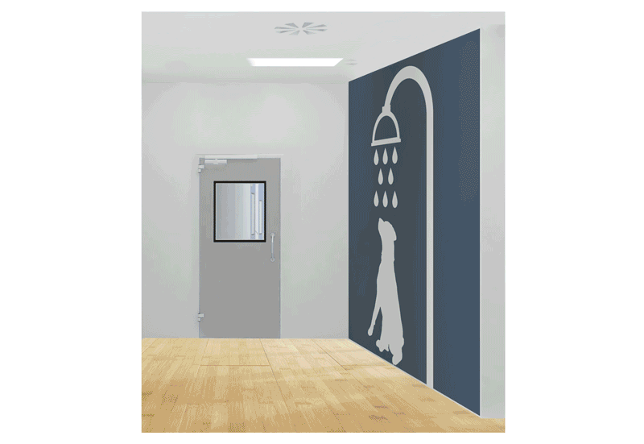
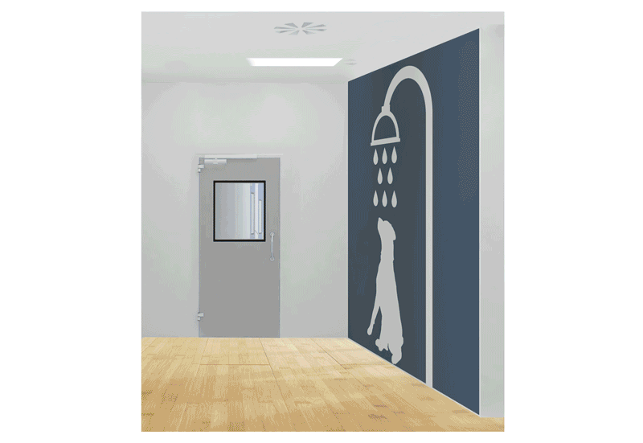

Marketing
Marketing work for various clients.
Revolution Brewing


While working for Ian Law, I had the opportunity to design two labels for Revolution Brewing beers, as well as several marketing materials.
Goose Island

During my time with Ian Law, I also was able to design several marketing materials for Goose Islan Brewing Co, including Posters for their barrell Aged Beers and T-shirts for their events.
CHC Helicopter


While I worked for Torque Digital, CHC Helicopter was looking for large scale graphics to be placed in their global offices. I chose to take bold, comic style images and overlay them with various elements CHC already uses in their marketing materials.
State & Chesnut


When at Torque Digital, I had the opportunity to work on marketing materials and in-building graphics for one of chicago's newest residental residencies.